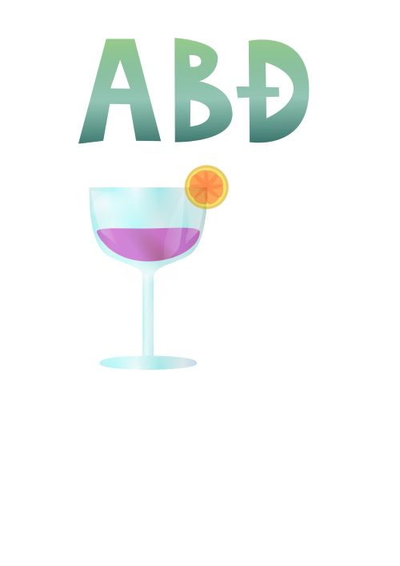

Font sam izradila u programu FontForge tako da sam za svako slovo nacrtala vlastiti oblik koristeći Bezierove krivulje i alate za uređivanje točaka. Pazila sam na ujednačen izgled slova, njihovu visinu i poravnanje. Nakon dizajna svakog znaka, provjerila sam metriku, te izvezla font u .otf formatu za korištenje u drugim programima.
U Illustratoru sam podesila ishodište u donji lijevi kut, uključila mrežu i nacrtala dvije Bezierove krivulje pomoću Pen alata. Dodala sam roze tonove, blendala krivulje s razmakom od 3 mm i izradila masku s vlastitim inicijalima. Završni rad sam spremila kao .ai i .pdf.
Radila sam s alatima za ponavljanje objekata (pattern i grid opcije), kreirala vlastite uzorke i simetrične kompozicije. Kroz tehniku mirroringa i rotacija, izrađivala sam dekorativne površine.
Kombinirala sam oblike tehnikama spajanja (Unite) i oduzimanja (Subtract). U vježbi sam koristila razne gradijente (linearni, radijalni i mesh), te radila s transparencijom i poretkom slojeva. Osim zadanog primjera, izradila sam i vlastitu ilustraciju koristeći iste tehnike.
Napravila sam vlastiti font s riječju „PRIRODA“ i koristila ga u ilustraciji s elementima trave, jelena i borova. Primijenila sam više vrsta gradijenata, swatch boje, transparenciju, maske i transformacije. Rad sam organizirala po slojevima i pripremila za ispis.
U Photoshopu sam retuširala fotografiju na kopiranom sloju koristeći Clone Stamp, Healing Brush, Burn/Dodge i zamućenje. Napravila sam lokalne korekcije i završne prilagodbe svjetline i kontrasta pomoću Levels i Brightness/Contrast.

Koristeći Adjustment Layer-e, mijenjala sam boje odabranih dijelova fotografije, primijenila koloriranje i izradila varijacije iste slike u različitim tonalitetima. Koristila sam slojeve, maske i blending opcije kako bih postigla estetski sklad.
Iz četiri slike sam izrezala elemente različitim alatima za selekciju i umetnula ih u jednu kompoziciju. Prilagodila sam boje, dodala realistične sjene i korigirala tonove pomoću Color Balance i Levels.

Kombinirala sam više fotografija, uključujući i vlastite, u složenu fotomontažu. Radila sam retuširanje, selekcije kanala, transformacije i koloriranje elemenata. Dodala sam sjene, tekst i organizirala sve slojeve u preglednu strukturu.
Izradila sam kinemagraf – spoj statične slike i animacije. Slika je obrađena u Photoshopu, a video dio u Premiereu (ili Shotcutu). Rezultat je GIF format u kojem se animira samo jedan detalj, dok ostatak slike ostaje nepomičan.


U ovoj vježbi sam uređivala video isječak te dodala tri efekta poput zoom-a, rotacije i blur-a. Umetnula sam statični i pomični tekst, kao i novi zvuk, te izvezla projekt kao .mp4 datoteku.
U programu Dreamweaver izradila sam dvije HTML stranice s multimedijskim sadržajem: slike, tekst, video, zvuk, navigacija i linkovi. Korištenjem CSS-a sam oblikovala izgled elemenata i dodala vizualnu strukturu.